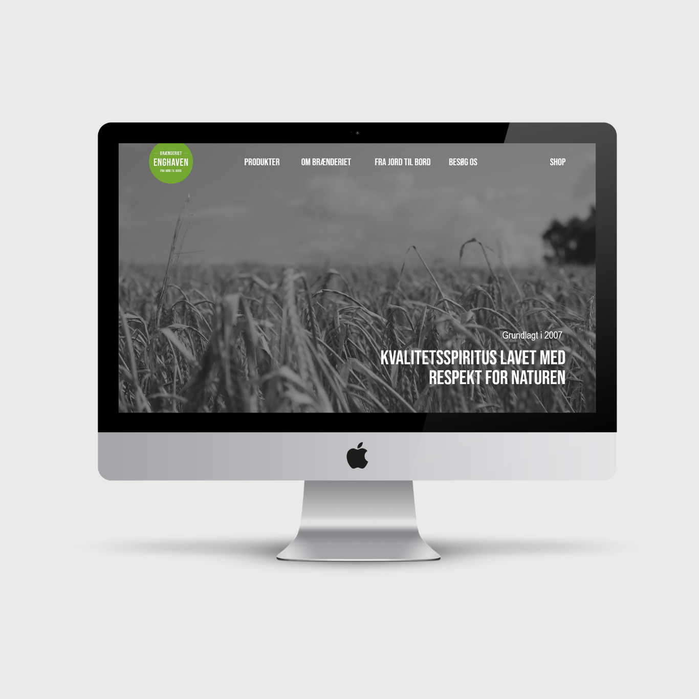
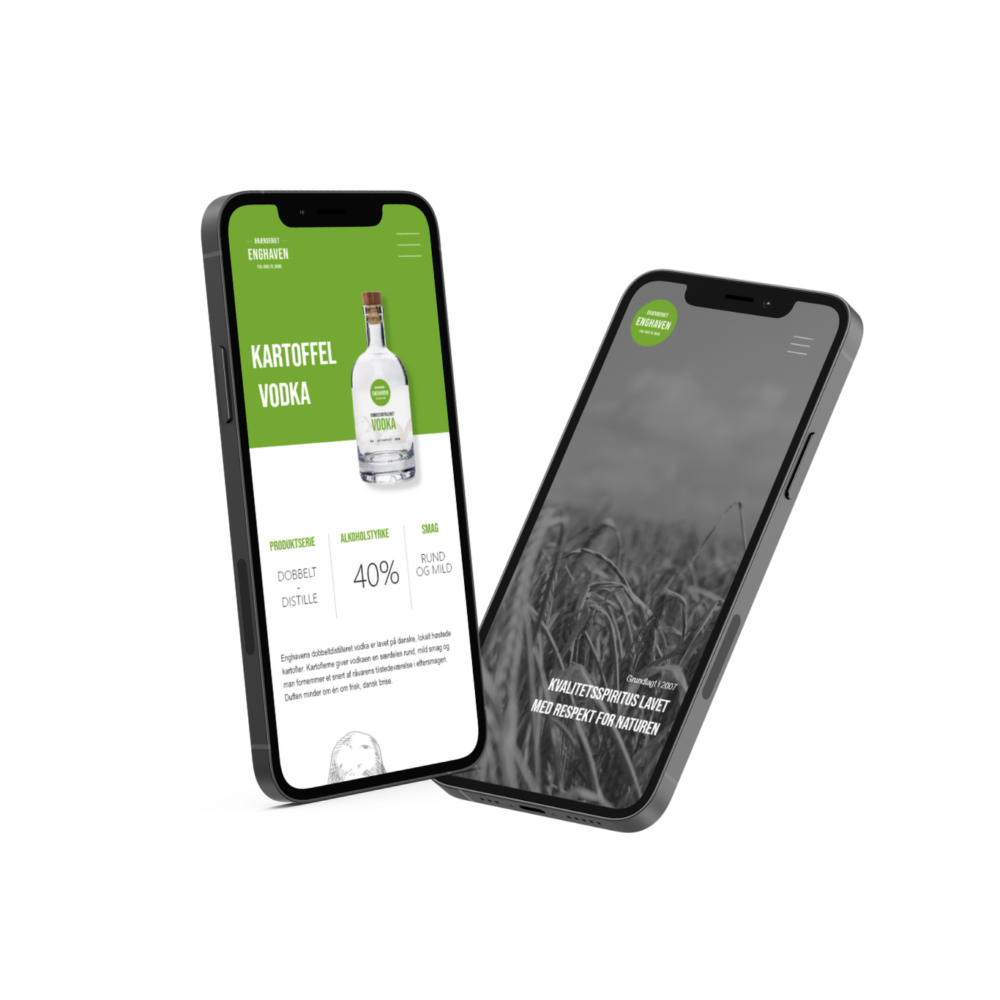

Concept
Brænderiet Enghaven is a micro distillery that back in 2007 found a niche in the liquor market and starting specialising in producing eau de vie – a French brandy made from fruits. The business was one of the first to produce this type of fruit brandy in Denmark and has since expanded their product catalogue to stronger spirits.
 Project Description
Before teaming up with Brænderiet Enghaven for my final multimedia design thesis, they were a micro distillery focused on business-to-business sales. However, after over a decade on the market, Enghaven is looking to expand their brand and shift their focus towards business-to-consumer sale. The goal of the project was to create a new and more consistent visual identity that is fulfills the needs of both B2B and B2C customers. Additionally the project included a redesign of their website.